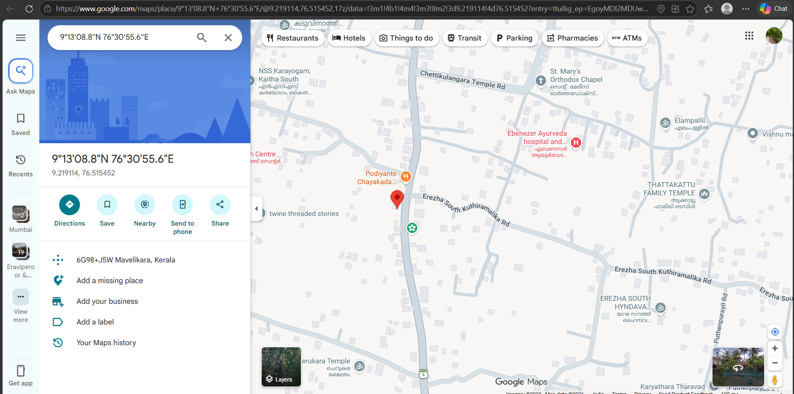

Projects
Gesture Controlled Virtual Mouse
Real-time computer vision system that enables mouse control using hand gestures captured via webcam.
View Project

Real-Time Pothole Detection Alert and Monitoring System
AI-powered pothole detection and monitoring system using YOLOv8, OpenCV, Raspberry Pi, GPS, and Firebase. The system detects potholes from live video feeds in real time, alerts users with audio warnings, and uploads pothole metadata to a monitoring dashboard.
View Project